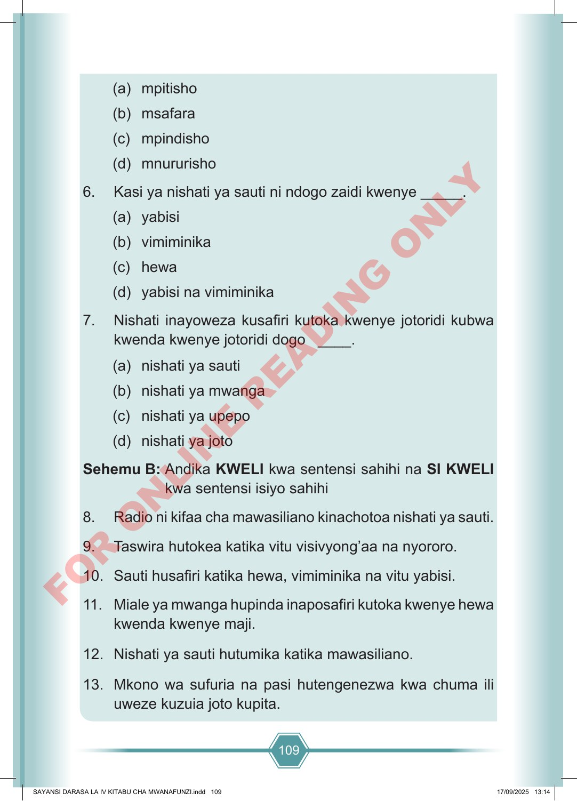

109 (a) mpitisho (b) msafara (c) mpindisho (d) mnururisho 6. Kasi ya nishati ya sauti ni ndogo zaidi kwenye _____. (a) yabisi (b) vimiminika (c) hewa (d) yabisi na vimiminika 7. Nishati inayoweza kusafiri kutoka kwenye jotoridi kubwa kwenda kwenye jotoridi dogo ____. (a) nishati ya sauti (b) nishati ya mwanga (c) nishati ya upepo (d) nishati ya joto Sehemu B: Andika KWELI kwa sentensi sahihi na SI KWELI kwa sentensi isiyo sahihi 8. Radio ni kifaa cha mawasiliano kinachotoa nishati ya sauti. 9. Taswira hutokea katika vitu visivyong’aa na nyororo. 10. Sauti husafiri katika hewa, vimiminika na vitu yabisi. 11. Miale ya mwanga hupinda inaposafiri kutoka kwenye hewa kwenda kwenye maji. 12. Nishati ya sauti hutumika katika mawasiliano. 13. Mkono wa sufuria na pasi hutengenezwa kwa chuma ili uweze kuzuia joto kupita. SAYANSI DARASA LA IV KITABU CHA MWANAFUNZI.indd 109 SAYANSI DARASA LA IV KITABU CHA MWANAFUNZI.indd 109 17/09/2025 13:14 17/09/2025 13:14 F O R O N L I N E R E A D I N G O N L Y